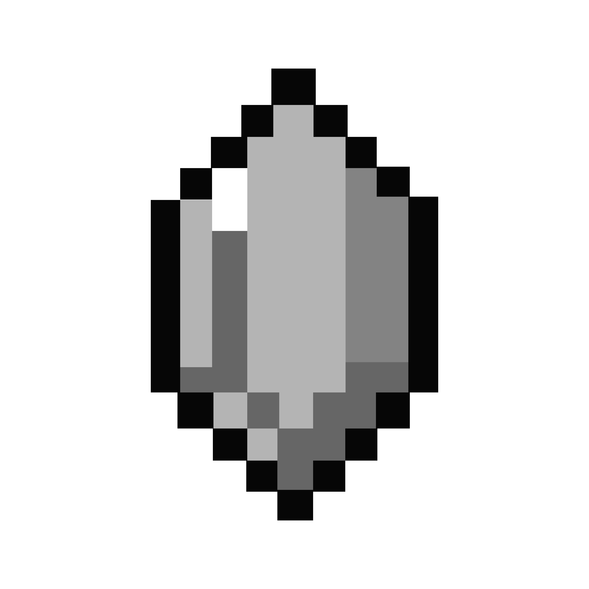
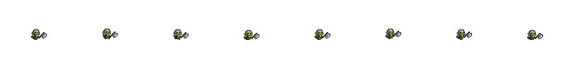
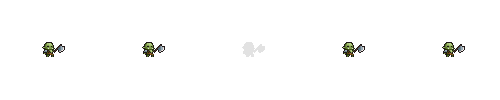
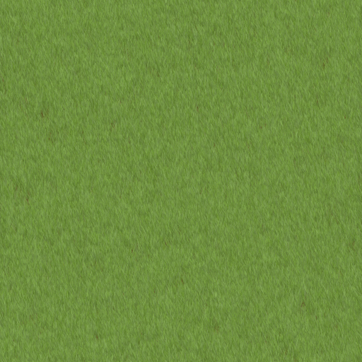
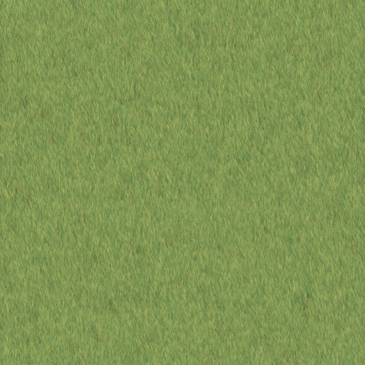
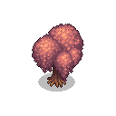
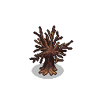
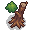
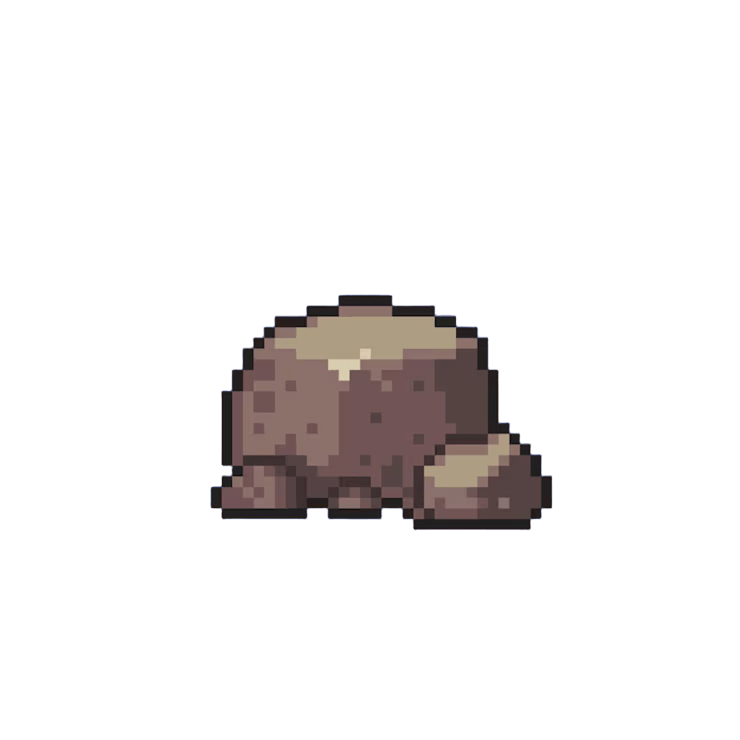
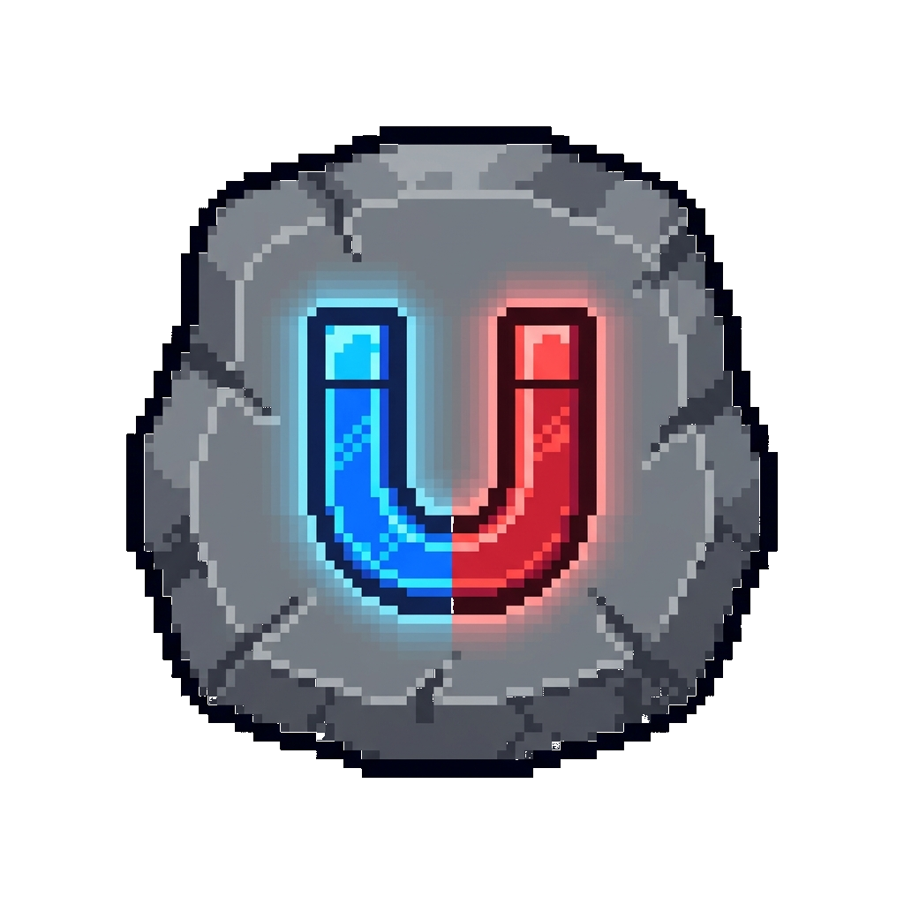

Marvelous Survivors
Reporte de Arquitectura, Mecánicas y Contenido Mantenible
🛠️ Core y Arquitectura
El juego está construido sobre un Bucle de Supervivencia clásico estilo Vampire Survivors, pero fuertemente impulsado por un sistema de escalado procedural y un gestor dinámico de Global.gd.
- Auto-Ataque: Las armas tienen un controlador independiente (
weapon_controller.gd) que calcula ángulos, disparos radiales o en línea, y detecta automáticamente al enemigo más cercano. - Optimización (NavMesh): Los enemigos no recalculan su ruta en cada frame. Usan un
NavigationAgent2Dcon un timer desincronizado (0.3s a 0.6s) que evita cuellos de botella severos de CPU en la horda masiva. - Interfaz Reactiva (HUD): Se comunica por señales para actualizar barras, niveles y el inventario, manteniendo el código limpio.
🦸♂️ El Jugador
El jugador tiene físicas 2D (CharacterBody2D) con un control top-down suave y mecánicas defensivas.
⚔️ Armamento y Tomos (Stats)
El límite actual es de 3 Armas y 5 Tomos simultáneos.
Armas Disponibles
- Arco (Arrow): Proyectil recto estándar, apunta al enemigo más cercano.
- Hacha (Axe): Proyectil en arco parabólico tipo "Boomerang / Hueso de Castlevania" que cae.
- Bala (Bullet): Proyectil rapidísimo con poco knockback pero ideal para mantener la horda a raya.
- Aura: Daño constante en un área alrededor del jugador. Escala visual y numéricamente.
Tomos de Estadísticas Base
Pueden aparecer al subir de nivel y mejoran exponencialmente a las armas: Daño, Cantidad, Empuje, Tamaño, Suerte, Vel. de Ataque, Regen y Vel. de Proyectiles.

Sistema de Cofres (23 Objetos)Los enemigos sueltan Monedas, que pueden usarse para abrir cofres. El costo de los cofres sube exponencialmente. Los objetos tienen 4 Rarezas (Tiers). La probabilidad de obtener algo raro escala directamente con tu stat de Suerte.
👾 Ecosistema de Enemigos
Los enemigos no son estáticos, escalan con el paso de los minutos y hay distintas clases:
- Básico: Salud base, velocidad promedio. Escala HP por minuto.
- Runner (Corredor): Pequeños y rojizos, tienen poca HP y resistencia al empuje reducida, pero son muy rápidos.
- Élite: Gigantes, lentos y durísimos. Sueltan Oro x15 y un anillo de 5 gemas de experiencia al morir.
Todos tienen físicas reales: interactúan y chocan entre ellos de forma dinámica, empujándose mutuamente en vez de apilarse en el mismo píxel, generando formaciones orgánicas.
🖼️ Galería de Assets
A continuación se muestran los recursos visuales actuales implementados en el proyecto (Pixel Art):
Protagonista (Orco)


Entorno y Naturaleza






Objetos Interactivos
